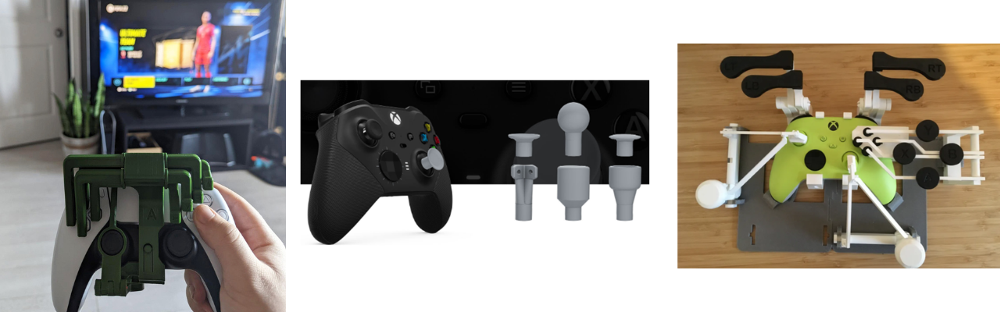
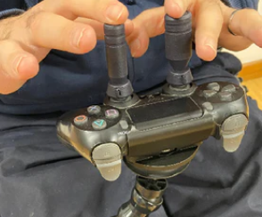
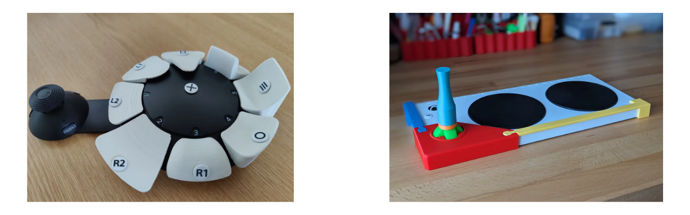
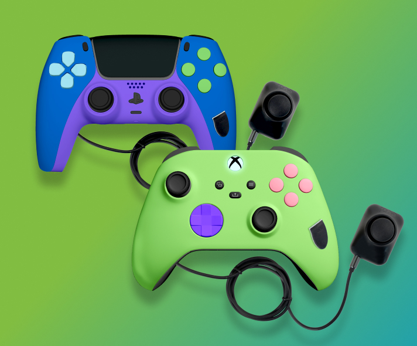
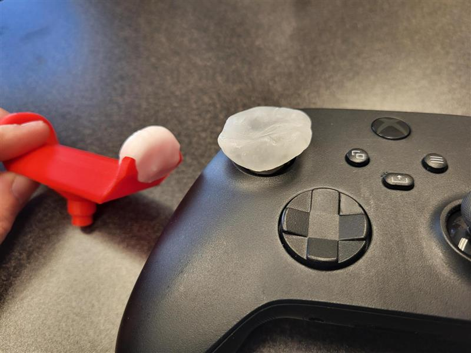
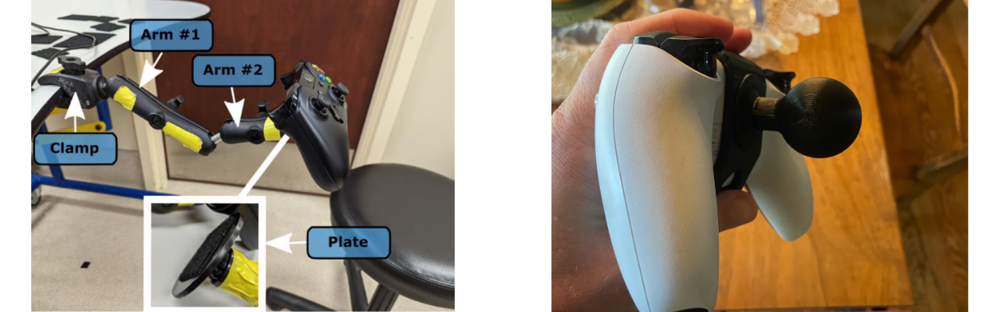

Controller Modifications

Various Controller Mods
What are Controller Modifications?
Controller modifications involve altering a standard commercial controller to better suit a player's physical needs. This can range from "non-invasive" changes, like snapping on 3D printed extensions, to "invasive" hardware hacks where the controller is opened up to add new input ports. Whether you are adding a 3D printed grip, mounting the device for stability, or purchasing a professionally modded unit, these adjustments bridge the gap between standard hardware and a player's unique range of motion.
3D Printed Modifications
3D printing has revolutionized alternative access by allowing for low-cost, highly customizable physical interfaces. There is a vast library of open-source designs available that can be printed and attached to existing controllers without requiring any permanent changes to the electronics.
Places to Find Controller Mods
| Device/Organization | Description | Link |
|---|---|---|
| Makers Making Change | • Range of one handed, thumbstick, and other controller mods. • Can be requested from volunteer makers. • You can access the files to make yourself or request a device. |
Makers Making Change Assistive Device Library |
| The Controller Project | • Supplying free controller modifications to gamers with disabilities or limb differences for many years. • You can access the files to make yourself or request a device. |
The Controller Project Site |

Link: Makers Making Change Library

Link: The Controller Project
One Handed Controllers
One-handed 3D printed adapters are among the most popular modifications. These mechanical rigs allow a player to access both analog sticks and all shoulder buttons using a single hand, often by resting the controller on a thigh or table to move the secondary stick via tilting.
Check out a one handed Mod in action:

Video: One Hand Mod in Action
Most one handed mods are made by a designer named Akaki. He has open sourced some of his designs but also sells them on his website directly. These cost approximatly $10 to 3D print at a local library or through our Makers Making Change program and $235+ if you buy from Akaki directly. If you want to buy them directly and not build them yourself or work with a volunteer, please view his website. Here is a list of current one handed modifications.
Akaki One Handed Controller Mods
| Controller | Open Source Files | Akaki Controller Website |
|---|---|---|
| Xbox Series X|S | Open Source Files | Akaki Website |
| Xbox One | Open Source Files | Akaki Website |
| DualSense (PS5) | Open Source Files | Akaki Website |
| DualShock 4 (PS4) | Open Source Files | Akaki Website |
| Nintendo Switch 1 | N/A - Has not open sourced these designs | Akaki Website |
| Nintendo Switch 1 • This is not an Akaki design |
Open Source Files - Left Hand Open Source Files - Right Hand |
N/A |

Link: Akaki Mods

Link: Xbox Series Mod

Link: Xbox One Mod

Link: DualSense PS5 Mod

Link: DualShock 4 PS4 Mod

Link: Nintendo Mod - Akaki

Link: Joy-Con Mod Left- Open Source

Link: Joy-Con Mod Right - Open Source
Adoption Rates
While powerful, one handed mods have a steep learning curve. Users often find they require significant practice to master the coordinated movements needed for modern games. For the players they work for, they work great.
Thumbstick Toppers
Thumbstick toppers are also a commonly requested controller mod. Xbox has even identified this and made their own website where a player can customize a thumbstick topper and get a 3D print file. Here are some common resources we use when looking for thumbstick toppers.

Thumbstick Toppers From Thumb Soldiers
Collection of Thumbstick Mods
| Thumbstick Topper Option | Description | Link |
|---|---|---|
| Xbox Adaptive Thumbstick Toppers | • Compatible with standard Xbox One, Xbox Series X|S, Elite, and Adaptive Joystick Controllers • Allows for customization of a range of toppers. Will give you a free 3D print file (.STL) that you can print them yourself or bring to a local 3D print vendor, possibly local library, or organization like Makers Making Change to print for you. |
Xbox Adaptive Thumbstick Site |
| Thumb Soldiers | • Commercial thumbstick toppers for sale | Thumb Soldiers Site |
| ActiveB1t Thumbsticks | • Open Source selection of 3D printed toppers for a range of controllers. • Download the files and print them yourself or bring to a local 3D print vendor, possibly local library, or organization like Makers Making Change to print for you. |
ActiveB1t Printables Page |
| AbleGamers Thumbstick Adapters | • Open Source selection of 3D printed toppers for a range of controllers. • Download the files and print them yourself or bring to a local 3D print vendor, possibly local library, or organization like Makers Making Change to print for you. |
AbleGamers Printables Page |
| Caleb Kraft Thumbstick Adapters | • Open Source selection of 3D printed toppers for a range of controllers. • Download the files and print them yourself or bring to a local 3D print vendor, possibly local library, or organization like Makers Making Change to print for you. |
Caleb's Thingiverse Page |

Link: Xbox Adaptive Thumbsticks

Link: Thumb Soldiers
Link: Activeb1t

Link: AbleGamers Thumbstick Adapters

Link: Caleb Thumbstick Adapters
Modifying Adaptive Controllers
It isn't just standard controllers that can be modded; adaptive hardware can also be customized. Here are a few modifications as an example:

SAC Button Modifications (left) and XAC Joystick Modification (right)
- Sony Access Controller (SAC): Many makers have designed custom "toppers" for the stick and unique button shapes to help players with specific grip requirements. The team that made the Sony Access Controller made a "3D printing Guide" with the specifications a designer would need to make custom joystick toppers and button caps.
- Designer, Harakan on Printables made various joystick and button cap toppers for the SAC.
- Xbox Adaptive Controller (XAC): Custom 3D printed knobs (like goals posts or large spheres) can be added to the joysticks used with the Xbox Adaptive Controller to accommodate different hand functions.
- Designer, Atom on Printables made a joystick that can snap onto the XAC to modify the way a user would interact with the D-Pad.

Link: SAC 3D printing Guide

Link: Harakan Toppers

Link: Atom Printables
Commercial Modifications
For players who want a professional, "out-of-the-box" solution, several companies specialize in modifying controllers for accessibility.
- Evil Controllers: They are a primary leader in this space, offering one-handed versions of the PS5, Xbox Series X, and Nintendo Switch controllers. These often feature re-routed buttons and analog sticks placed on the back of the controller for easier access.

Link: Evil Controllers

Evil Controllers One-Handed PS5 and Xbox Series X\|S Controllers
DIY Modifications
If a 3D printed part or commercial controller isn't a perfect fit, DIY materials offer a way to create a completely bespoke interface. Here is a common method we use.
- Moldable Plastic (Instamorph): This is a lightweight thermoplastic that becomes moldable in hot water and hardens into a strong plastic when cool. It is excellent for creating custom-molded finger grips, enlarging small buttons, or creating a personalized joystick topper that fits the exact contour of a player's hand.

Spruce Joystick Topper and Xbox Controller with Moldable Plastic Added

Video: Moldable Plastic Tutorial
Mounting a Controller
A controller modification is only effective if the controller stays in the right place. Mounting provides the stability needed for players who cannot hold a controller's weight or who use 3D printed one-handed rigs.
-
RAM Mounts: A modular ball-and-socket system that can securely hold a controller in any orientation. Many 3D printed mods include a "RAM Ball" base specifically for this purpose.
-
Hook and Loop (Velcro): Industrial-strength Velcro can be used to secure a controller to a lap tray or desk, ensuring it doesn't slide away during intense sessions.
See the Mounting Section in Alt Access for more information.

Hook and Loop on a flat plate using RAM Arms (left) and AbleGamers 3D print RAM Attachment to Controllers (right)
Want to learn more about this program or request a device?
Copyright © 2026 Neil Squire / Makers Making Change. Content is licensed under the CC BY SA 4.0 License. This website is built with MKDocs. MKDocs is MIT-licensed software and is not covered by the CC BY-SA license applied to this site's content.
Visit Makers Making Change